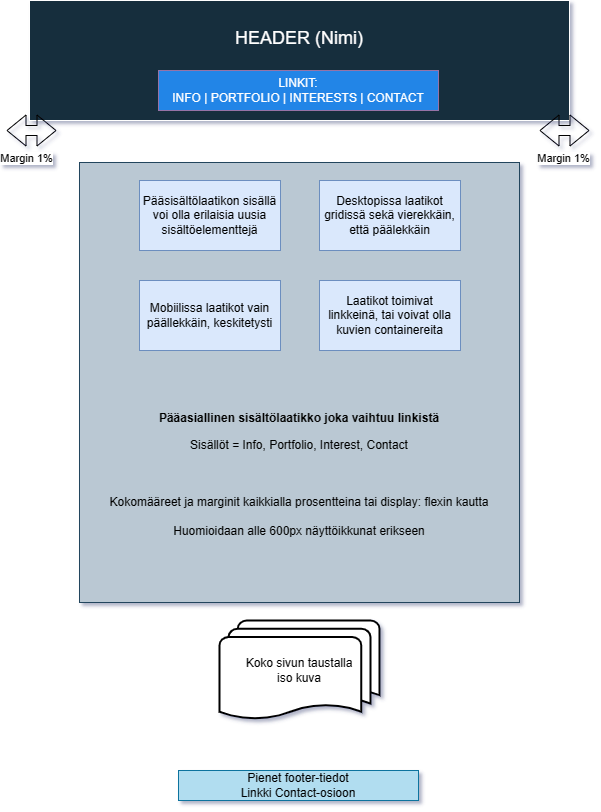

Harjoitustyön tarkoitusena on toteuttaa omat kotisivut. Web-sivuston tarkoituksena on toimia henkilökohtaisena portfolio-sivuna, jossa esittelen omaa koulutusta, osaamista, kokemusta ja harrastuneisuutta, erityisesti tietotekniikan alalta. Tärkeä painotus myös aikasemman tutkinnon, solubiologian kokemuksella. Lisäksi omia harrastuksia ja relevanttia työnantajia kiinnostavaa laajempaa henkilökohtaista taustaa.
Sivusto on suunattu työnantajille. Työnantajat käyvät sivuilla rekrytointivalintoja tehdessään, arvioidessani omaa sopivuuttani kyseiseen työpaikkaan. Rekrytoinneissa on useasti paljon hakijoita, joten ensivaikutelma ja sivuston selkeys ja käytettävyys ovat tärkeitä. Työnantajat ja rekrytoivat ihmiset ovat todennäköisesti minua vanhempia, korkeakoulutettuja ihmisiä, asiantuntijarooleissa. Lukijat ovat sekä teknisistä että sosiaalisimmista taustoista, mutta tarkkaa rajausta lukijan taustasta ei voi, eikä tule tehdä
Sivuston tulee toimia sekä desktop- että mobiiliselaimilla. Sivuston tarkoitus on tehdä hyvä vaikutus ja luoda muistijälki, mutta ei esitellä kaikkia mahdollisia CSS-taitoja. Totetutan sivuston englanniksi, koska useat työpaikat ovat kansainvälisiä ja englanti on alan lingua franca. Suomalaiset osaavat kyllä lukea englantia, mutta englanniksi työskentelevät rekrytoijat eivät välttämättä osaa suomea, mikä vatisi kaksi eri kieliversiota kotisivuista.
Minä, Aapo Mikkola, toteuttaa koko sivuston ja vastaa kaikesta, mikä siihen liittyy. Työhaun kontektissa tiivis informaatio on tärkeää, ja haluan, että tämä näkyy myös kotisivuillani. Alustavasti aion toteuttaa sivuston yhtenä sivuna, joita voi selata navigaatiopalkin aihealuelinkeillä. Tärkeää on tuoda esille kaikki relevantti osaaminen kauniissa formaatissa, mutta ei jaaritella. Sivuston rakenne voisi myös noudattaa jonkinlaista yksinkertainen-monimutkainen -kaavaa, jossa tärkeä informaatio on nopeasti saatavilla, ja halutessaan aiheesta voi lukea lisää esim. collapsible-elementtien kautta.
Sivusto toteutaan HTML5-standardin mukaisesti ja ylläpito tapahtuu aluksi JAMKin Student-palvelimella, josta myöhemmin sivuston voi siirtää omaan Github Pages:iin. Turvallisuudessa tulee ottaa huomioon, mitä tietoa voidaan julkistaa ja mitkä yhteystiedot sivustolla näkyy. Sivustolle voisi laittaa myös formaallimman CV-PDF:n tarkkoine yhteystietoineen salasanan taakse.
Layoutin puolesta suunnittelen yksittäistä sivua, mahdollisesti rinnakaisilla tekstielementeillä ja sopivilla kuvilla. Haluan, että sivusto on kaunis, mutta yksinkertainen ja selkeä, mistä työnantajille oleellisen tiedon löytää nopeasti. Sivustoa päivitetään ennen työnhakua ja kun merkittäviä muutoksia omissa taidossa on tapahtunut. Myös uudet työnantajia kiinnostavat projektit voidaan lyhyesti kuvailla sivustolle ja linkittää esim. omaan Githubiin.
Pyrin käyttämään sivustolla vain oman tekijänoikeuteni piiriin kuuluvia sisältöjä. Mikäli muita sisältöjä tulee, käyttölupa ja oikea viittaus tulee tarkistaa lähteestä.
Layout-suunnitelma toteutui hyvin:
Portfolio-sivuston toteutus sisälsi seuraavat vaiheet:
index.html, rivi 28 : Article lacks heading. Consider using “h2”-“h6” elements to add identifying headings to all articles.
Tämä on ok, "page"-luokalla ei voi tässä rakenteessa olla omaa alaotsikkoa
CSS validoitu, ei huomautuksia
Sivusto noudattaa mielestäni hyvin ulkonäöllisiä ja teknisiä vaatimuksia. Työnantajan näkökulma, selkeys ja asiansisällön tiivistäminen on otettu huomioon. Noudattaa semanttisia rakenteita ja HTML5-standardia. Sivusto voisi kuitenkin olla vielä laajempi, monipuolisempi ja viimeistellympi. Olen silti tehnyt myös paljon asioita kurssin aihealueiden ulkopuolelta (Javascript, animaatiot ym.). Raportoinnissa mukana kaikki vaaditut elementit ja prosessi on kuvattu riittävällä tasolla.
Harjoitustyön itsearvoitu arvosana 4.